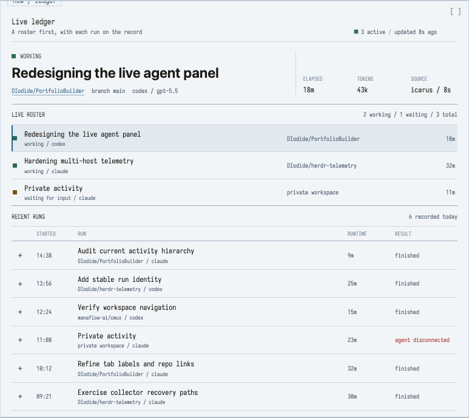
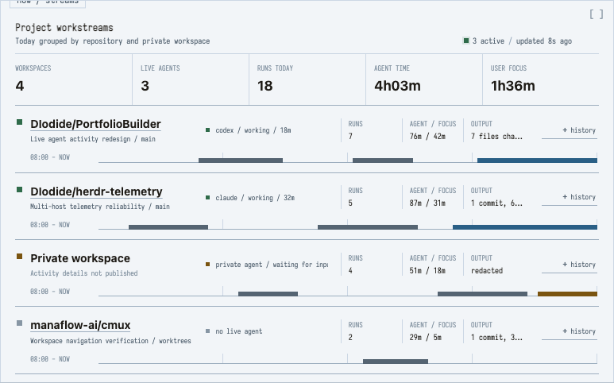
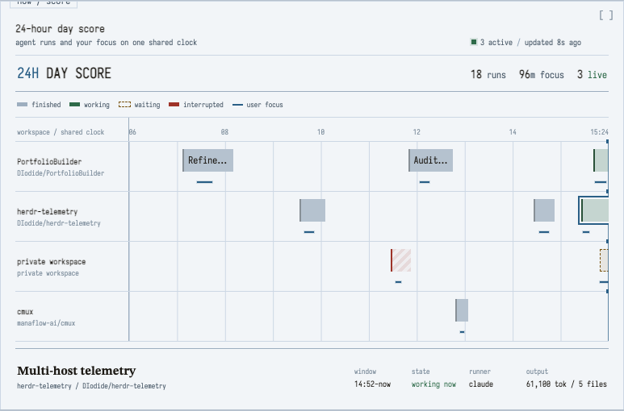
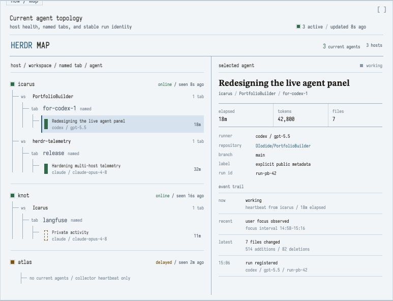

01 / live first
Live ledger
Uncapped current agents up top; completed work becomes a compact, semantic run table.
Open interactive mock ->
Preview generated during visual QAcurrent agents, without a card grid
Each direction keeps the existing home workspace and swaps only the live Herdr pane. The concepts change the information hierarchy, not just the surface styling.
01 / live first
Uncapped current agents up top; completed work becomes a compact, semantic run table.
Open interactive mock ->
Preview generated during visual QA02 / project first
Aggregate repeated runs by public repo or privacy-shaped workspace, then show the agents inside.
Open interactive mock ->
Preview generated during visual QA03 / time first
A shared clock for agent runtime and optional human focus, with an honest mobile chronology.
Open interactive mock ->
Preview generated during visual QA04 / herdr first
The real host, workspace, named-tab, and agent hierarchy, with freshness and a selected run trail.
Open interactive mock ->
Preview generated during visual QAStart from Workstreams for the public portfolio, then borrow Live Ledger's current-agent roster. It reads as projects moving through a day, not as a gallery of model receipts.
Reuse status, host, focus, health, and full usage data first. Then add
stable event_id/run_id, truthful outcomes,
freshness, working-vs-waiting duration, and explicit opt-in
public_title. Nothing prompt-derived enters the design.
Read the audit and field proposal.